<meta charset="UTF-8">
<!--
  ============================================================
  싱스원 T1 홈카메라 (T1) — 카페24 상품 상세설명 삽입용 [v3.1]
  · 상세설명 에디터 [HTML] 소스 모드에 아래 전체를 붙여넣기
  · images/ 경로는 웹FTP 업로드 후 실제 경로로 치환
  · 저장 후 위지윅 모드로 재전환 금지 (style 태그 삭제됨)
  ============================================================
-->
<style>
@import url('https://cdn.jsdelivr.net/gh/orioncactus/pretendard@v1.3.9/dist/web/static/pretendard.min.css');

/* ── 원본 디자인 CSS (색상·톤 유지, 폰트크기만 유동화) ── */
/* 화면에는 보이지 않지만 검색엔진·스크린리더가 읽는 텍스트 */
  .sr-only{
    position:absolute; width:1px; height:1px; padding:0; margin:-1px;
    overflow:hidden; clip:rect(0,0,0,0); white-space:nowrap; border:0;
  }
  .lucell{max-width:720px; margin:0 auto; font-family:'Apple SD Gothic Neo','Malgun Gothic',sans-serif; color:#222;}
  .lucell img{display:block; width:100%; height:auto; border:0;}
  .lucell section{margin:0; padding:0;}

/* ═══════════════════════════════════════════════════════════════════
   [v3.1] 카페24 상세설명 대응 — 컨테이너 쿼리 전환 + 스킨 CSS 방어
   · 뷰포트(화면 폭)가 아니라 삽입된 컬럼 폭에 반응
   · 아래는 위 원본 CSS를 덮어쓰는 오버라이드 (선언 순서 유지 필수)
   ═══════════════════════════════════════════════════════════════════ */

/* 1) 컨테이너 선언 — 이 파일의 핵심 */
.lucell{
  container-type:inline-size;
  container-name:lud;
  display:block;
  width:100%;
  max-width:860px;
  margin:0 auto;
  font-size:16px;
  text-align:left;
  word-break:keep-all;
  overflow-wrap:anywhere;
  -webkit-text-size-adjust:100%;
  text-size-adjust:100%;
}

/* 2) 스킨 CSS 방어 */
.lucell *,.lucell *::before,.lucell *::after{box-sizing:border-box !important;}
.lucell *{font-family:inherit;}
.lucell img{display:block !important;max-width:100% !important;height:auto !important;border:0;}
.lucell table{width:100% !important;max-width:100% !important;border-collapse:collapse;background:none;}
.lucell p,.lucell li,.lucell h1,.lucell h2,.lucell h3,.lucell h4{
  word-break:keep-all;overflow-wrap:anywhere;}
/* 표 셀은 반드시 break-word.
   anywhere를 쓰면 min-content 폭이 1글자가 되어 열이 세로로 붕괴한다. */
.lucell th,.lucell td{word-break:keep-all;overflow-wrap:break-word;}
.lucell th{white-space:nowrap;}   /* 원본 동작 유지 — 좁은 컨테이너에서만 해제 */
.lucell ul,.lucell ol{list-style:none;}

/* 3) 아이콘 그리드 — 미디어쿼리 없이 폭에 따라 3열→2열→1열 */
.lucell .grid{
  display:grid !important;
  grid-template-columns:repeat(auto-fit,minmax(150px,1fr));
  gap:clamp(26px,4.5cqi,44px) clamp(10px,2cqi,20px);
  justify-content:center;
}
.lucell .feat{flex:initial;min-width:0;text-align:center;}
.lucell .feat svg{width:clamp(38px,6cqi,52px);height:clamp(38px,6cqi,52px);margin:0 auto 14px;display:block;}

/* 4) 썸네일 — 고정 % 폭 제거, 유동 배치 */
.lucell .thumbs{display:flex;flex-wrap:wrap;justify-content:center;}
.lucell .thumbs figure{flex:1 1 200px;width:auto;min-width:0;max-width:330px;}
.lucell .parts .thumbs figure{flex:1 1 130px;width:auto;min-width:0;max-width:200px;}
.lucell .holder .thumbs figure{flex:1 1 220px;width:auto;min-width:0;max-width:300px;}

/* 5) 콜아웃 다이어그램 */
.lucell .clabel{font-size:clamp(9.5px,1.6cqi,12.5px);white-space:normal;}
.lucell .art-diagram{max-width:100%;}


/* 7) 이미지 개별 크기·위치 캡 재선언 */

/* 6) 컨테이너 폭별 여백/레이아웃 전환 (화면 폭 아님) */
@container lud (max-width:620px){
  .lucell .sec{padding:56px 22px;}
  .lucell .hero{padding:48px 22px 0;}
  .lucell .foot{padding:36px 22px;}
  .lucell .fire{padding-top:56px;}
  .lucell .fire .fire-txt{padding:0 22px;}
  .lucell .life .overlay{padding:24px 22px 26px;}
  .lucell .g-table th,.lucell .g-table td{padding:7px 4px;}
  .lucell table{table-layout:fixed;}
  .lucell th{white-space:normal;}
  .lucell .q{padding:14px 16px;}
  .lucell .a{padding:12px 16px 0;}
}
@container lud (max-width:460px){
  .lucell .sec{padding:44px 16px;}
  .lucell .hero{padding:40px 16px 0;}
  .lucell .foot{padding:30px 16px;}
  .lucell .fire .fire-txt{padding:0 16px;}
  .lucell .life .overlay{position:static;background:#1a1a1a;padding:22px 16px 26px;}
  .lucell .art-diagram{aspect-ratio:auto;}
}
@container lud (max-width:330px){
  .lucell .grid{grid-template-columns:1fr;}
}


/* 8) 원본 @media → @container 전환 */

/* 9) 컨테이너 쿼리 미지원 브라우저 폴백 */
@supports not (container-type:inline-size){

}
</style>
<article class="lucell" itemscope itemtype="https://schema.org/Product">

  <!-- ============================================================
       00. 입점 브랜드 안내
       ============================================================ -->
  <section id="brand-notice" aria-labelledby="brand-notice-h">
    <h2 id="brand-notice-h" class="sr-only">입점 브랜드 상품 안내</h2>
    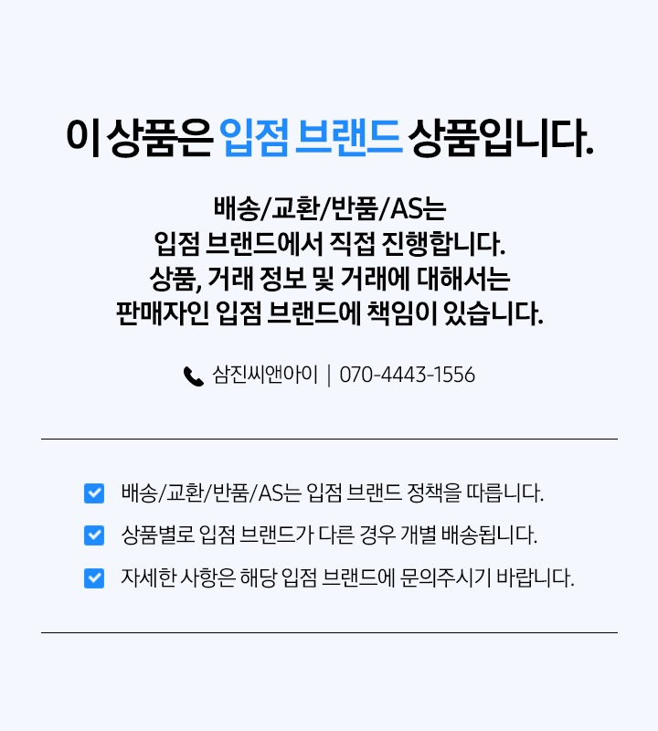
    <div class="sr-only">
      <p>배송/교환/반품/AS는 입점 브랜드에서 직접 진행합니다. 상품, 거래 정보 및 거래에 대해서는 판매자인 입점 브랜드에 책임이 있습니다.</p>
      <p>문의: 삼진씨앤아이 070-4443-1556</p>
      <ul>
        <li>배송/교환/반품/AS는 입점 브랜드 정책을 따릅니다.</li>
        <li>상품별로 입점 브랜드가 다른 경우 개별 배송됩니다.</li>
        <li>자세한 사항은 해당 입점 브랜드에 문의주시기 바랍니다.</li>
      </ul>
    </div>
  </section>

  <!-- ============================================================
       01. 메인 비주얼 + 핵심 기능 요약
       ============================================================ -->
  <section id="hero" aria-labelledby="hero-h">
    <h1 id="hero-h" class="sr-only" itemprop="name">ThingsOne T1 홈카메라 — 보안을 위해 칩셋 단계부터 세심하게 설계된 홈 카메라</h1>
    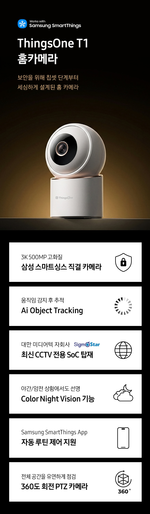
    <div class="sr-only" itemprop="description">
      <h2>ThingsOne T1 홈카메라 핵심 기능</h2>
      <ul>
        <li>3K 500MP 고화질 — 삼성 스마트싱스 직결 카메라</li>
        <li>움직임 감지 후 추적 — AI Object Tracking</li>
        <li>대만 미디어텍 자회사 SigmaStar 최신 CCTV 전용 SoC 탑재</li>
        <li>야간·암전 상황에서도 선명한 Color Night Vision 기능</li>
        <li>Samsung SmartThings App 자동 루틴 제어 지원</li>
        <li>전체 공간을 유연하게 점검하는 360도 회전 PTZ 카메라</li>
      </ul>
    </div>
  </section>

  <!-- ============================================================
       02. 삼성 스마트싱스 연동
       ============================================================ -->
  <section id="smartthings" aria-labelledby="smartthings-h">
    <h2 id="smartthings-h" class="sr-only">Works with Samsung SmartThings — 삼성 스마트싱스 직결 홈카메라</h2>
    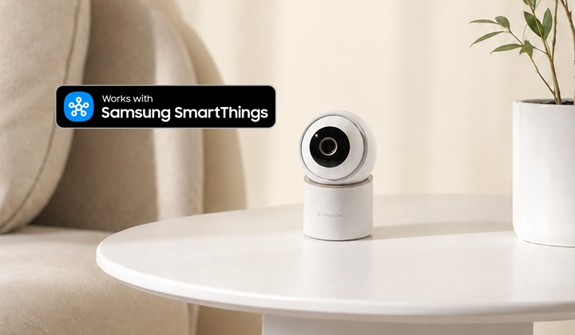
  </section>

  <!-- ============================================================
       03-04. AI 감지 (모션트래킹 · 움직임 · 음성 · 알림)
       ============================================================ -->
  <section id="ai-detection" aria-labelledby="ai-detection-h">
    <h2 id="ai-detection-h" class="sr-only">AI 모션트래킹 · 움직임 감지 · 음성 감지 · 팝업 알림</h2>
    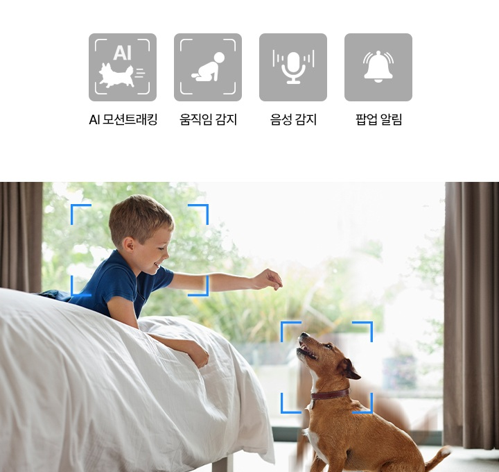
    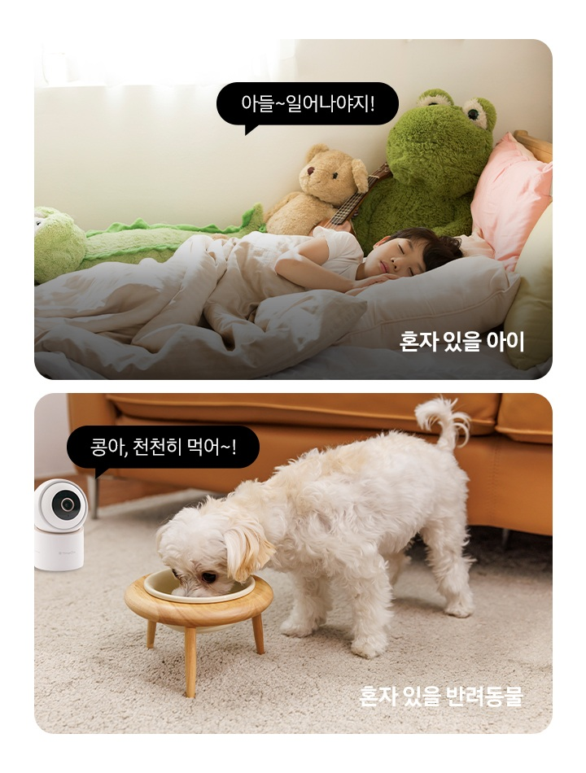
    <div class="sr-only">
      <h3>AI가 알아서 찾고, 따라가고, 알려줍니다</h3>
      <ul>
        <li>AI 모션트래킹 — 움직이는 대상을 자동으로 인식해 따라갑니다.</li>
        <li>움직임 감지 — 사람·반려동물의 움직임을 감지합니다.</li>
        <li>음성 감지 — 소리를 감지해 이벤트를 기록합니다.</li>
        <li>팝업 알림 — 감지 즉시 스마트폰으로 알림을 보냅니다.</li>
      </ul>
      <p>혼자 있을 아이, 혼자 있을 반려동물에게 양방향 통화로 말을 걸 수 있습니다.</p>
    </div>
  </section>

  <!-- ============================================================
       05. CCTV 전용 SoC
       ============================================================ -->
  <section id="soc" aria-labelledby="soc-h">
    <h2 id="soc-h" class="sr-only">최신 CCTV 전용 SoC(SigmaStar) 탑재로 칩셋 단계부터 강화된 보안</h2>
    
  </section>

  <!-- ============================================================
       06-07. 화질 · 시야각 · 회전 · 줌
       ============================================================ -->
  <section id="image-quality" aria-labelledby="image-quality-h">
    <h2 id="image-quality-h" class="sr-only">3K 초고화질 · 110° 광각 시야각 · 360° 회전 · 6배 줌</h2>
    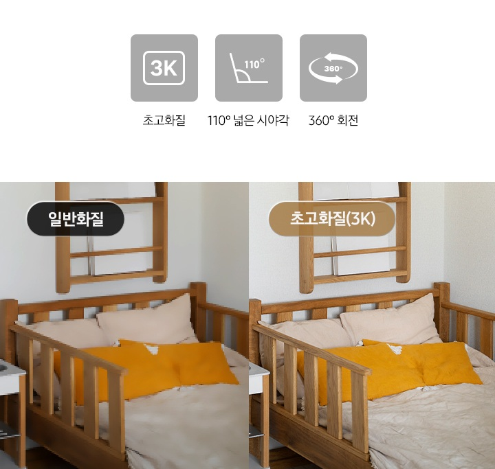
    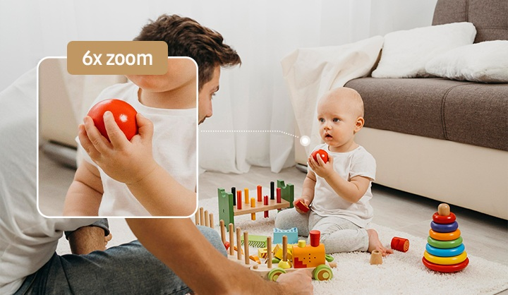
    <div class="sr-only">
      <ul>
        <li>3K 초고화질 — 일반화질 대비 또렷한 디테일</li>
        <li>110° 넓은 시야각</li>
        <li>360° 회전 PTZ</li>
        <li>6배 줌(6x zoom)</li>
      </ul>
    </div>
  </section>

  <!-- ============================================================
       08. 나이트비전
       ============================================================ -->
  <section id="night-vision" aria-labelledby="night-vision-h">
    <h2 id="night-vision-h" class="sr-only">Night Vision · IR LED 탑재로 야간에도 선명하게</h2>
    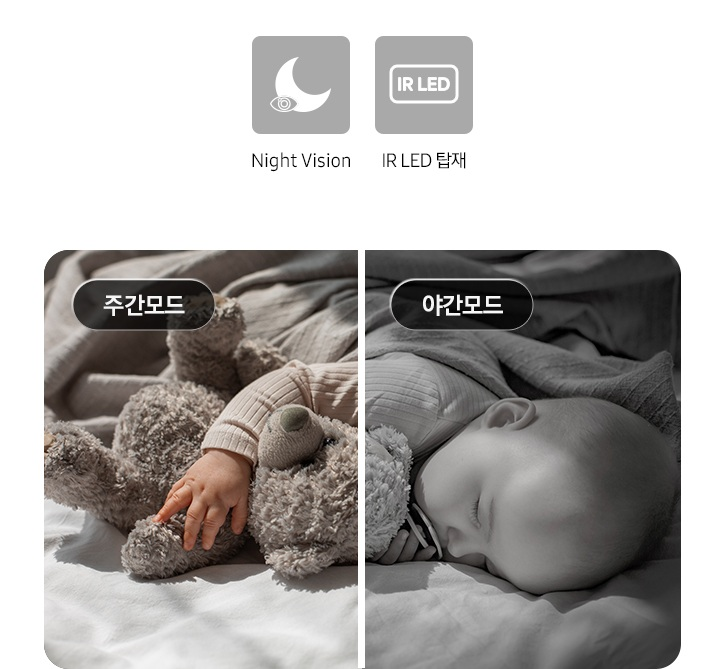
  </section>

  <!-- ============================================================
       09. Wi-Fi 6 듀얼밴드
       ============================================================ -->
  <section id="wifi" aria-labelledby="wifi-h">
    <h2 id="wifi-h" class="sr-only">듀얼 밴드 연결 — 최신 Wi-Fi 6로 더 빠르고 안정적인 연결</h2>
    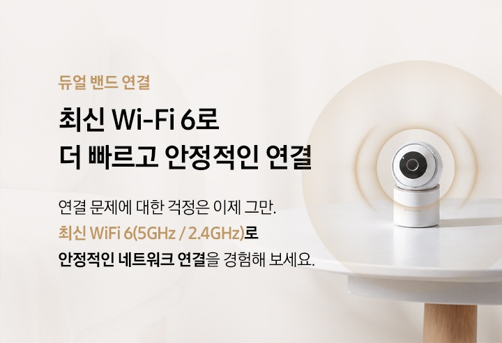
    <p class="sr-only">연결 문제에 대한 걱정은 이제 그만. 최신 Wi-Fi 6(5GHz / 2.4GHz)로 안정적인 네트워크 연결을 경험해 보세요.</p>
  </section>

  <!-- ============================================================
       10. 삼성 기기 연동 (TV 등)
       ============================================================ -->
  <section id="device-link" aria-labelledby="device-link-h">
    <h2 id="device-link-h" class="sr-only">삼성 스마트 TV 등 스마트싱스 기기에서 실시간 확인</h2>
    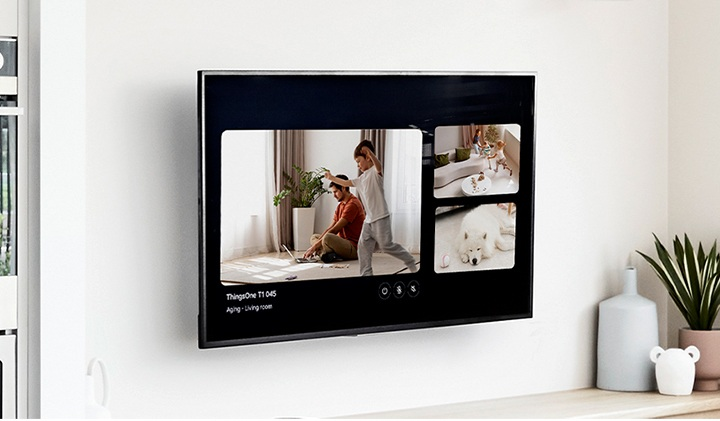
  </section>

  <!-- ============================================================
       11-12. 보안 · 프라이버시
       ============================================================ -->
  <section id="security" aria-labelledby="security-h">
    <h2 id="security-h" class="sr-only">카메라 · 클라우드 · 앱 3단계 보안과 프라이버시 모드</h2>
    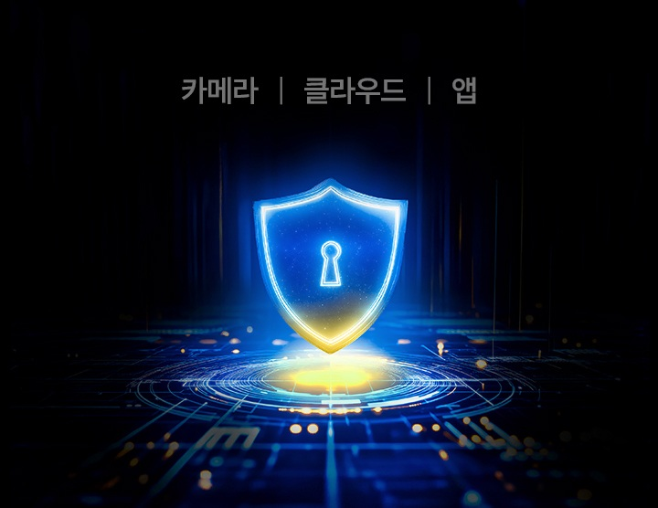
    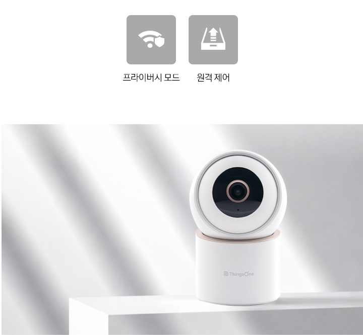
    <div class="sr-only">
      <p>카메라 · 클라우드 · 앱 전 구간에서 보안을 강화했습니다.</p>
      <ul>
        <li>프라이버시 모드 — 필요할 때 촬영을 차단합니다.</li>
        <li>원격 제어 — 어디서든 앱으로 제어할 수 있습니다.</li>
      </ul>
    </div>
  </section>

  <!-- ============================================================
       13. 설치 방식
       ============================================================ -->
  <section id="installation" aria-labelledby="installation-h">
    <h2 id="installation-h" class="sr-only">테이블 · 천장 · 벽면 3가지 설치 방식</h2>
    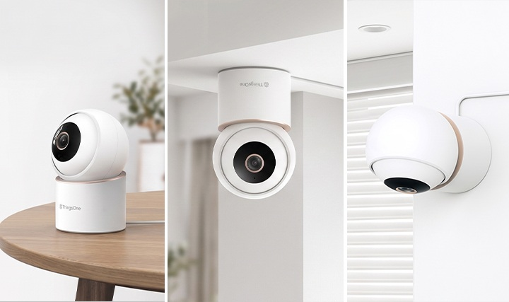
  </section>

  <!-- ============================================================
       14. 프라이버시 마스킹
       ============================================================ -->
  <section id="masking" aria-labelledby="masking-h">
    <h2 id="masking-h" class="sr-only">촬영이 필요 없는 영역은 가리는 프라이버시 마스킹</h2>
    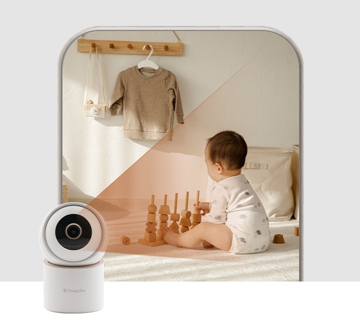
  </section>

  <!-- ============================================================
       15. 아이 울음소리 감지
       ============================================================ -->
  <section id="cry-detection" aria-labelledby="cry-detection-h">
    <h2 id="cry-detection-h" class="sr-only">아이 울음소리 감지 — 자동 클립 생성 &amp; 알림 전송</h2>
    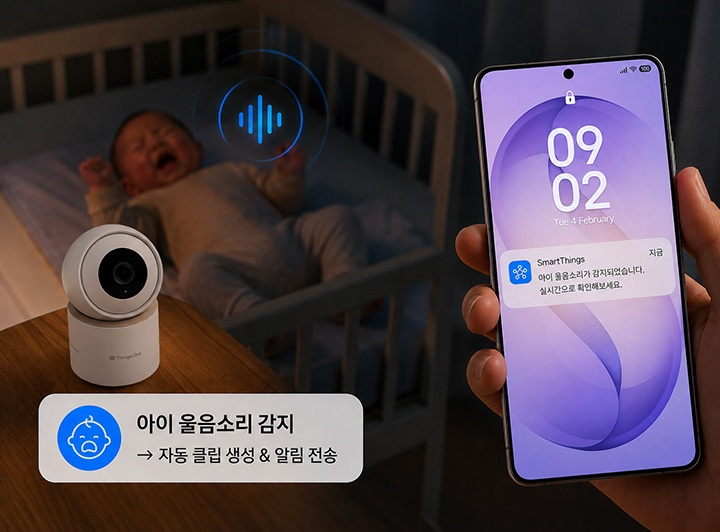
    <p class="sr-only">아이 울음소리를 감지하면 자동으로 클립을 생성하고 스마트싱스 앱으로 알림을 전송합니다.</p>
  </section>

  <!-- ============================================================
       16. 추천 대상
       ============================================================ -->
  <section id="recommended" aria-labelledby="recommended-h">
    <h2 id="recommended-h" class="sr-only">이런 분께 추천합니다</h2>
    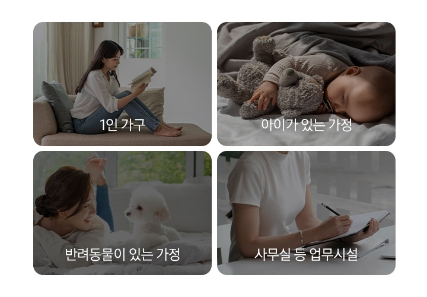
    <ul class="sr-only">
      <li>1인 가구</li>
      <li>아이가 있는 가정</li>
      <li>반려동물이 있는 가정</li>
      <li>사무실 등 업무시설</li>
    </ul>
  </section>

  <!-- ============================================================
       17-19. 기기 등록 방법
       ============================================================ -->
  <section id="setup" aria-labelledby="setup-h">
    <h2 id="setup-h" class="sr-only">삼성 스마트싱스 앱 기기 등록 방법 — 약 30초면 완료</h2>

    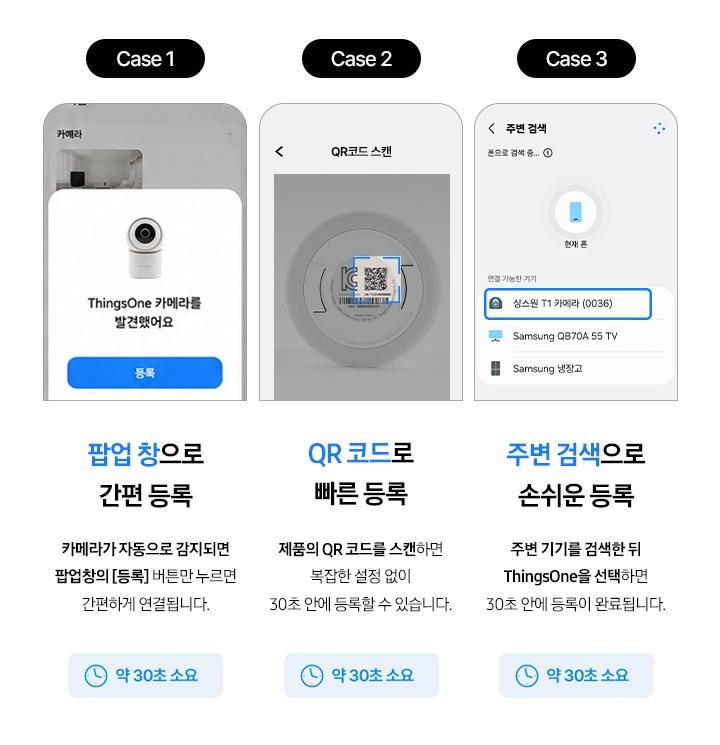

    <div class="sr-only">
      <h3>Case 1. 팝업 창으로 간편 등록 (약 30초 소요)</h3>
      <p>카메라가 자동으로 감지되면 팝업창의 [등록] 버튼만 누르면 간편하게 연결됩니다.</p>
      <h3>Case 2. QR 코드로 빠른 등록 (약 30초 소요)</h3>
      <p>제품의 QR 코드를 스캔하면 복잡한 설정 없이 30초 안에 등록할 수 있습니다.</p>
      <h3>Case 3. 주변 검색으로 손쉬운 등록 (약 30초 소요)</h3>
      <p>주변 기기를 검색한 뒤 ThingsOne을 선택하면 30초 안에 등록이 완료됩니다.</p>
    </div>

    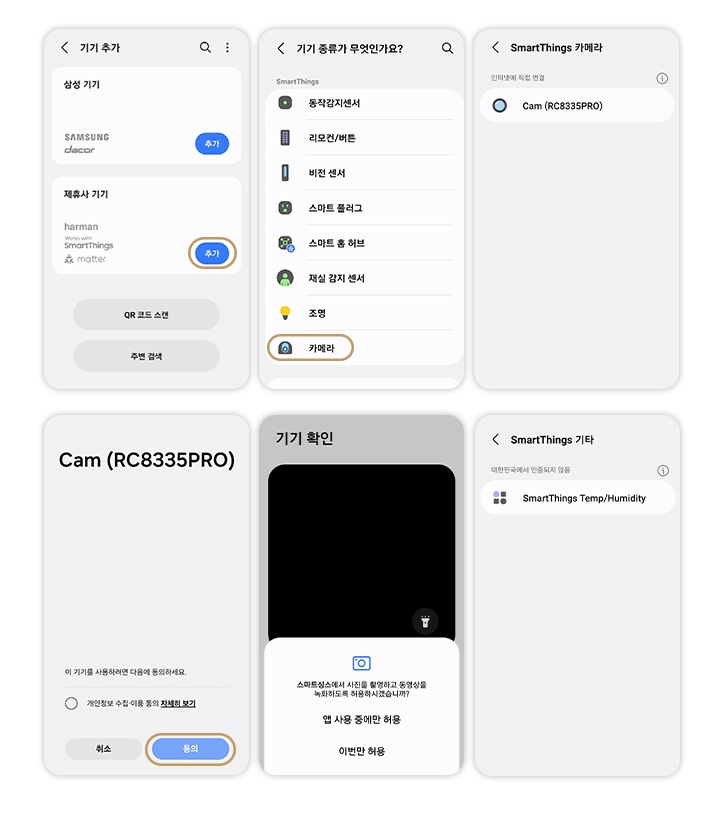

    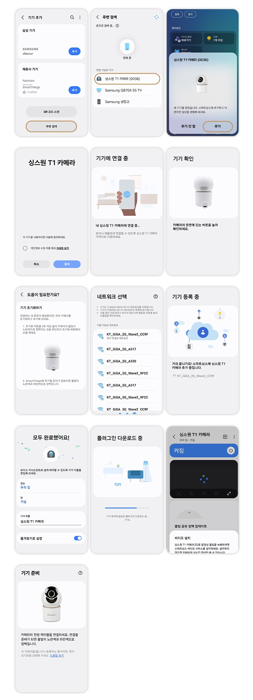
  </section>

  <!-- ============================================================
       20. 구성품
       ============================================================ -->
  <section id="package" aria-labelledby="package-h">
    <h2 id="package-h" class="sr-only">구성품 안내</h2>
    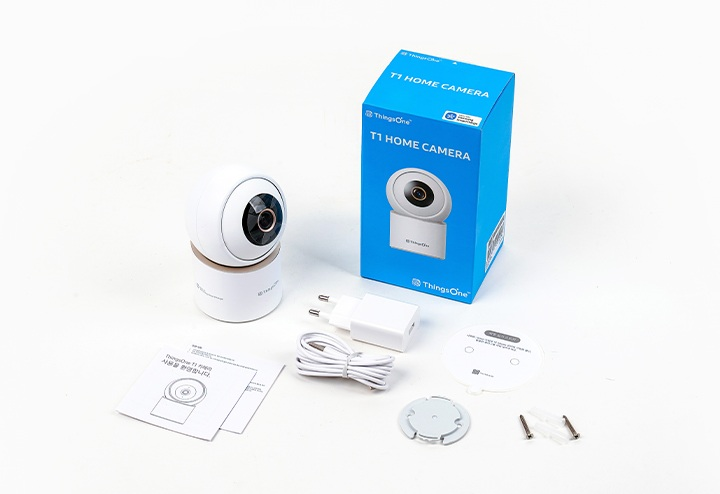
    <ul class="sr-only">
      <li>T1 홈카메라 본체</li>
      <li>전원 어댑터</li>
      <li>USB Type-C 케이블</li>
      <li>설치 브래킷 및 나사</li>
      <li>사용 설명서</li>
    </ul>
  </section>

  <!-- ============================================================
       21. 디자인 · 전원 사양
       ============================================================ -->
  <section id="design" aria-labelledby="design-h">
    <h2 id="design-h" class="sr-only">콤팩트한 홈 인테리어 맞춤형 디자인 — DC 5V / 1.5A (Type-C)</h2>
    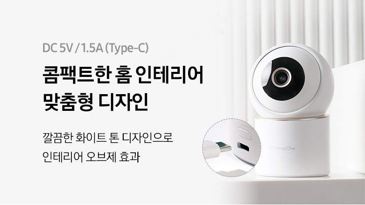
    <p class="sr-only">깔끔한 화이트 톤 디자인으로 인테리어 오브제 효과를 줍니다. 전원 사양은 DC 5V / 1.5A (Type-C)입니다.</p>
  </section>

  <!-- ============================================================
       22. 브랜드 신뢰 · AS
       ============================================================ -->
  <section id="trust" aria-labelledby="trust-h">
    <h2 id="trust-h" class="sr-only">안심하고 구매할 수 있는 스마트 홈 카메라</h2>
    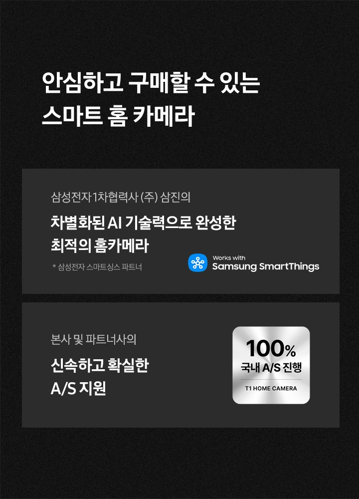
    <div class="sr-only">
      <p>삼성전자 1차 협력사 (주)삼진의 차별화된 AI 기술력으로 완성한 최적의 홈카메라입니다. (삼성전자 스마트싱스 파트너)</p>
      <p>본사 및 파트너사의 신속하고 확실한 A/S 지원 — 100% 국내 A/S 진행</p>
    </div>
  </section>

  <!-- ============================================================
       23. 에스원 안심 서비스 · 요금제
       ============================================================ -->
  <section id="service-plan" aria-labelledby="service-plan-h">
    <h2 id="service-plan-h" class="sr-only">에스원 안심 서비스 및 클라우드 요금제 안내</h2>
    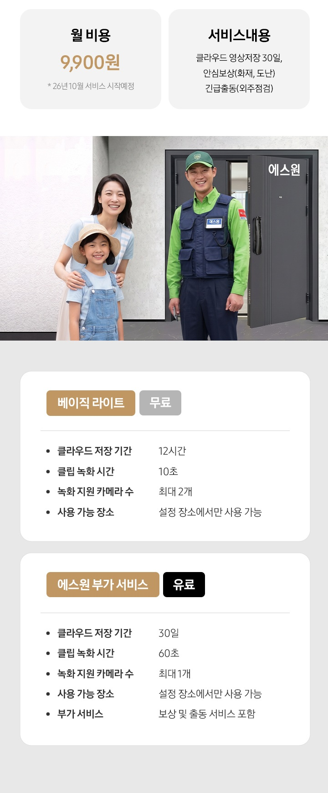

    <!-- 요금제 비교 표: 텍스트로도 제공되어 검색엔진이 내용을 인덱싱합니다 -->
    <table class="sr-only">
      <caption>싱스원 T1 홈카메라 클라우드 요금제 비교</caption>
      <thead>
        <tr><th scope="col">항목</th><th scope="col">베이직 라이트 (무료)</th><th scope="col">에스원 부가 서비스 (유료)</th></tr>
      </thead>
      <tbody>
        <tr><th scope="row">클라우드 저장 기간</th><td>12시간</td><td>30일</td></tr>
        <tr><th scope="row">클립 녹화 시간</th><td>10초</td><td>60초</td></tr>
        <tr><th scope="row">녹화 지원 카메라 수</th><td>최대 2개</td><td>최대 1개</td></tr>
        <tr><th scope="row">사용 가능 장소</th><td>설정 장소에서만 사용 가능</td><td>설정 장소에서만 사용 가능</td></tr>
        <tr><th scope="row">부가 서비스</th><td>-</td><td>보상 및 출동 서비스 포함</td></tr>
      </tbody>
    </table>
    <p class="sr-only">에스원 부가 서비스 월 비용 9,900원 (2026년 10월 서비스 시작 예정). 서비스 내용: 클라우드 영상저장 30일, 안심보상(화재·도난), 긴급출동(외주점검).</p>
  </section>

</article>
